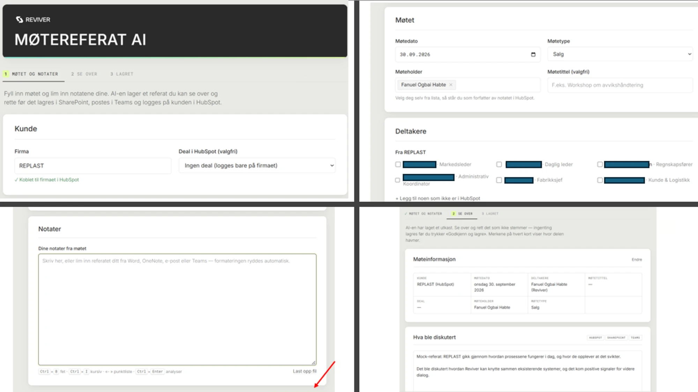

Hva Reviver gjør
Reviver tilbyr en B2B-programvareplattform som forenkler omsetning av avfall og resirkulert plast. Plattformen knytter sammen resirkulerere, produsenter og kjøpere med sporbarhet, dokumentasjon og mer effektiv handel.
Praksisjournal
Jeg dokumenterer arbeidet med å utvikle en strukturert og automatisert prosess for kundemøter hos Reviver.
Praksisperioden
I praksisperioden hos Reviver skal jeg jobbe med utvikling av en AI-støttet løsning som skal gjøre håndtering av kundemøter mer strukturert og effektiv. Løsningen skal blant annet kunne bruke AI til å:
Arbeidet vil også innebære å se på integrasjoner mot systemer som:
Dette arbeidet gir meg muligheten til å få praktisk erfaring med AI, systemintegrasjoner, automatisering og utvikling av IT-løsninger som bidrar til reell verdi i en faktisk arbeidshverdag.
Praksissted
Reviver AS er en Kristiansand-basert start-up som digitaliserer handel, sporbarhet og forvaltning av resirkulert plast - og bidrar til en mer sirkulær verdikjede.
Reviver tilbyr en B2B-programvareplattform som forenkler omsetning av avfall og resirkulert plast. Plattformen knytter sammen resirkulerere, produsenter og kjøpere med sporbarhet, dokumentasjon og mer effektiv handel.
Reviver er et aksjeselskap innen programvareutvikling (SaaS), med hovedkontor i Kristiansand. Selskapet er en del av miljøet rundt sirkulær økonomi og plastgjenvinning.
Min første jobb var på Hå gjenvinningsstasjon, og derfor føles praksisperioden hos Reviver som et «full circle»-øyeblikk. Jeg får koble den tidlige erfaringen med gjenvinning til interessen min for teknologi, og utforske hvordan digitale løsninger kan gjøre arbeidshverdagen mer effektiv.
Kundemøteprosjektet treffer kjernen i IT og IS gjennom datainnsamling, AI, systemintegrasjoner og arbeidsflyt. Innsikt fra møter skal omformes til strukturert informasjon som kan brukes av mennesker og systemer.
Statusrapport 1
Basert på det jeg har erfart og lært om Reviver som bedrift i praksisperioden så langt, oppsummerer jeg her bransjen, arbeidsoppgavene mine og det som har vært mest utfordrende og spennende.
Reviver opererer i skjæringspunktet mellom sirkulær økonomi og programvareutvikling. Selskapet er en Kristiansand-basert techstartup som bygger en B2B SaaS-plattform for handel, sporbarhet og dokumentasjon av avfall og resirkulerte materialer. Målet er å gjøre avfallsstrømmer om til sporbare, omsettelige ressurser gjennom automatisering av kontrakter, fakturering, logistikk og regelverksetterlevelse. Kundene befinner seg i bransjer med store materialstrømmer, blant annet bygg og anlegg, fiskeri og akvakultur, samt lager og logistikk.
Et tydelig særtrekk er fokuset på sporbarhet og dokumentert materialkvalitet gjennom hele verdikjeden, ikke bare digitalisering av eksisterende prosesser. Reviver har også internasjonale ambisjoner: selskapet er medlem av UN Global Compact, samarbeider med FN om et pilotprosjekt i Indonesia, og har inngått partnerskap med aktører som Ainir for å gjøre sykehusplast mer sirkulær.
Så langt har jeg jobbet med onboarding og å sette meg inn i kundemøteprosessen som prosjektet mitt skal automatisere. Jeg har satt opp utviklingsmiljøet, gjort applikasjonen klar til å ta imot en API-nøkkel for integrasjon med Claude (AI), og begynt å utforske hvordan løsningen skal kobles mot systemer som SharePoint, Teams og HubSpot.
Den største utfordringen så langt har vært innloggingsproblemer mot systemene som trengs for Claude- og SharePoint-integrasjonen, noe som forsinket deler av det planlagte arbeidet. Samtidig er det spennende å jobbe med et prosjekt der AI skal strukturere møtereferater automatisk og identifisere action points, og å se hvordan Reviver kobler sammen bærekraft og teknologi i praksis.
Statusrapport 2
Siden Status 1 (18.09) har prosjektet tatt en ny retning. Her oppsummerer jeg hva jeg har jobbet med fram til 16.10, hva som har vært utfordrende og spennende, og hvordan veien videre ser ut.

Klikk på bildet for å se det i full størrelse.
Første del av perioden gikk med til å gjøre ferdig appen «Møtereferat AI». 23.09 koblet jeg på HubSpot, slik at møtet ble logget som notat på firmaet og deltakerne, og hvert action point ble en oppgave til den ansvarlige. Appen fikk Revivers visuelle profil, og jeg ryddet i koden: backend ble delt i egne klasser med tester, og en frontend-komponent på rundt 1100 linjer ble delt opp. Jeg strammet også inn sikkerheten med en sperre som bare tillater lesing og nye notater og oppgaver, og flyttet hemmeligheter ut av git.
Samtidig begynte vi å diskutere en annen retning, og endte med å gjøre løsningen om til en Claude-skill. Den deles ut til teamet gjennom Revivers Claude-organisasjon, så den trenger verken egen server eller egen API-nøkkel. Hovedverdien er at møteholderen kan sparre med AI-en og gjøre tynne notater om til et godt referat. 06.–07.10 skrev og testet jeg skillen «reviver-moetereferat». Den lager referat med action points, pain points, løsningsvurdering og potensial, spør etter det som mangler i stedet for å finne på noe, og håndterer flere møtetyper. Den kan også skrive en oppfølgingsepost til kunden, bygget på mønsteret fra selgernes egne e-poster.
Da HubSpot ble lagt ned i bedriften, overtok et pipeline-ark i Excel. Jeg skrev referansefiler for arket, med kolonner, formater og formler, og skillen oppdaterer nå også et lead-dashboard som en kollega har laget. 14.10 landet vi på en ny arbeidsflyt: sparringen skjer i Claude Desktop, og skillen lager en ferdig instruksblokk per ark som limes inn i Claude i Excel. Blokken finner riktig rad, viser gamle og nye verdier og ber om bekreftelse før noe skrives. Jeg testet alt systematisk med 11 scenarier, både oppdiktede og anonymiserte ekte notater, og til slutt besto innlimingen i både pipeline-arket og lead-dashboardet. Skillen deles ut som en zip-fil, og jeg så også gjennom en kollegas skill for møteforberedelse og foreslo forbedringer.
Før · egen app «Møtereferat AI»
Etter · Claude-skill
Den største utfordringen var at planene endret seg underveis. HubSpot-integrasjonen jeg brukte en hel dag på, ble overflødig to uker senere. Det lærte meg å bygge løsninger som tåler at systemene rundt endrer seg.
Microsoft 365-koblingen i Claude kan bare lese, ikke skrive, så skillen kunne ikke oppdatere arkene selv. Det er grunnen til instruksblokken. En tidlig test viste også at arket ble ødelagt når AI-en lagde en redigert kopi, fordi nedtrekkslister og koblinger forsvant. Derfor returnerer skillen aldri en redigert kopi. Jeg fant også en feil i selve pipeline-arket: summeringsformlene stoppet før de siste radene, så nye deals kom ikke med i totalen. Det rettet jeg i samråd med teamet. Etter ønske fra veileder skriver skillen foreløpig bare til en testkopi av arket.
Mye av jobben var instruksjonsskriving mer enn kode. Testene viste at AI-en noen ganger trakk slutninger som ikke sto i notatene, stilte for mange spørsmål på én gang eller slo opp dealen for sent. Små formuleringer og rekkefølgen på stegene betydde mye. Det mest spennende er å se AI brukt som sparringspartner i hverdagen, ikke bare som en tekstgenerator.
Overgangen fra å skrive kode til å skrive presise instruksjoner og teste dem mot ekte notater har vært den største endringen for meg. Jeg har også måttet spørre meg om en egen app alltid er riktig svar.
Jeg har hatt tett dialog med selgerne, som er hovedbrukerne, og med veileder om tilganger og sikkerhet. Siden jeg er i praksis én dag i uka, må hver dag planlegges godt.
Veien videre er å få skillen i bruk hos selgerne, teste hva som skjer når to personer redigerer arket samtidig, og på sikt vurdere automatisering med Power Automate eller en egen skrivekobling.
Ukentlig dokumentasjon
Her loggfører jeg ukentlige innlegg om arbeidet med kundemøteprosessen, hva jeg lærer, hvilke utfordringer som oppstår og hvordan løsningen utvikler seg.
Student
Jeg er en tredjeårsstudent på bachelorprogrammet IT og informasjonssystemer ved Universitetet i Agder. I forbindelse med studiene flyttet jeg til Kristiansand, men jeg er oppvokst på Nærbø.
Jeg har alltid vært interessert i tekniske løsninger, og har de siste årene fått en særlig interesse for programmering og utvikling. Jeg er lærevillig, nysgjerrig og motivert for å utforske nye teknologier og bygge løsninger som fungerer godt i praksis.
 GitHub
GitHub